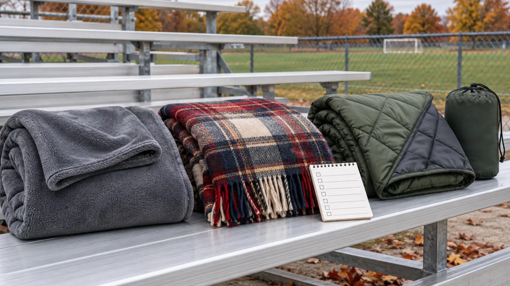

Washable fleece
Fits: dry bleachers, short games, dirty kid gear and frequent machine washing. Tradeoff: wind can cut through; saturated fleece is still wet and bulky. Reject: vague size, shedding seams or care that the household will not follow.
SIDELINE WARMTH · NON-ELECTRIC · AUTHORITY-EXPANSION
A blanket that is warm in the living room can be useless on a wet aluminum bench. Compare the job, test the real carry, and keep heated products out of this guide.

Do not shop for “the warmest blanket.” Shop for the sideline job. A washable fleece throw is simple and cheap but wind and wet seating expose its limits. A wool-blend blanket can manage cool, changeable conditions well, but it may be heavier, itchier and harder to care for. A packable insulated blanket can block wind and damp ground when the shell and construction support those claims, but slick fabric, noisy surfaces and bulky storage can annoy a family.
This guide covers passive, non-electric blankets only. No heated blanket, battery blanket, weighted blanket or wearable device is recommended. In September 2026, CPSC announced a fire-and-burn recall involving certain JKMAX heated blankets and heating pads. That specific recall does not mean every heated product is recalled; it does show why the exact model, instructions and current CPSC recall database matter. For a shared school sideline, passive layers are the simpler boundary.
The test does not prove warmth, waterproofing, durability or safety. It reveals whether the family’s current system fails at the real contact point.
Write one line for each candidate: open dimensions, packed dimensions, total weight, fiber and insulation, maker-stated water boundary, care method, and venue fit. Add the current return route and recall check. Do not compare a product photograph to measured dimensions; stage a towel or sheet at the listed size.
For a family of four, “large” means nothing. Decide whether the job is two seated laps, one adult-and-child wrap, or a ground barrier. A giant blanket shared across moving kids often drags, trips or leaves everybody negotiating. Two smaller blankets may pack and dry better; one larger blanket may reduce loose pieces. The venue and family decide.
Blankets do not replace clothing. Start with dry base layers, a real insulating layer, wind or rain protection, hat and footwear. The kids’ winter-hat fit guide handles ears, hoods and hearing. The winter-boot guide handles current fit and drying. Use the hand-warmer comparison only after reading its burn, battery and recall boundaries.
Pack the blanket in a simple wet/dry tote: dry blanket on one side, a large washable bag for the damp return, gloves and hats above it, food separated. The wet-gear entryway system should be ready before the game ends. At home, open the blanket promptly and follow the exact care label. Never store damp fabric compressed in the car.
Keep aisles, stairs, wheelchair spaces and exits clear. Do not attach blankets to railings or heaters. Keep loose fabric away from vehicle exhaust, grills, fire pits and ignition sources. Children must be able to stand and move without being wrapped or restrained. Stop using a blanket with melted fabric, torn insulation, sharp hardware, contamination or a care-label conflict.
Search the exact brand and model in the CPSC recall database, not just the product type. Marketplace titles can change. A recall check is not a certification check, and absence from the database is not proof of safety. Follow the manufacturer’s current warnings and the venue’s rules. The winter car kit is a separate emergency system; a game blanket does not replace vehicle-specific stopped-time supplies.
Rain: use the venue’s official delay and bag rules; a damp shell claim is not permission to sit through unsafe weather. Wind: secure only as the maker and venue allow; if fabric becomes a sail or blocks others, put it away. Low energy: bring the existing washable throw and sit near an exit. Child is cold: leave or warm in a safe staffed/vehicle location according to the event plan; do not keep adding fabric while ignoring wet clothing, shivering or behavior change.
Skip a purchase if the family rarely sits outdoors, the venue bans the needed bag size, the current layer system has not been tested, or no one will follow the care label. Skip wool blends for a known fiber sensitivity unless the exact construction is acceptable. Skip packable insulated designs if sharp bleachers, laundering needs or sensory noise make them a poor fit.
Reviewed October 31, 2026 using the U.S. Consumer Product Safety Commission’s current recall database and its September 17, 2026 JKMAX recall notice. The category matrix, seven-field card, wet-bench test and passive-only boundary are independent editorial tools—not laboratory testing, a warmth rating, medical advice, venue approval or a product endorsement. Three paid category links are clearly disclosed and injected by the approved site system; the editorial image is not a product image. Report corrections through About.
MAKE THE WEEK COUNT
Build the plan your family can finish well, then leave enough energy for the next part of the day.
More family plansTHE USEFUL STUFF
These are practical categories to compare—not a reason to overpack. Check fit, specifications and current reviews before buying.
Paid links: As an Amazon Associate I earn from qualifying purchases. You pay no additional cost.
Compare open size, packed bulk, fiber, edge finish and exact care label. Fleece is simple to wash, but it is not automatically windproof or waterproof.
See current options → COMPARE ON AMAZONCheck the exact fiber percentages, weight, itch sensitivity, fringe, packed size and care method. The word wool does not define the blend or maintenance.
See current options → COMPARE ON AMAZONCompare shell, insulation, open and packed dimensions, care limits and the maker’s precise water-resistance boundary. A quilted look proves no performance claim.
See current options →